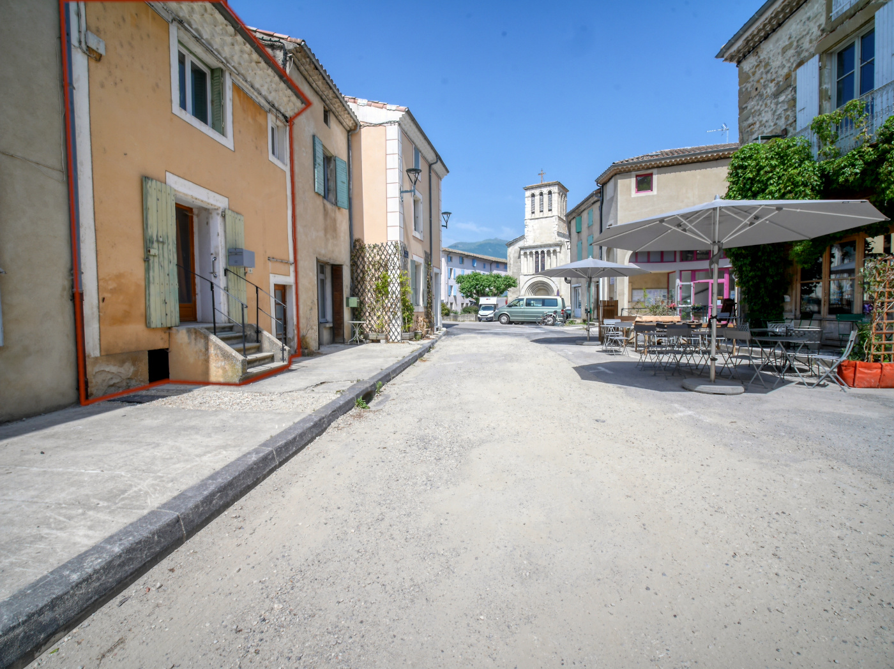
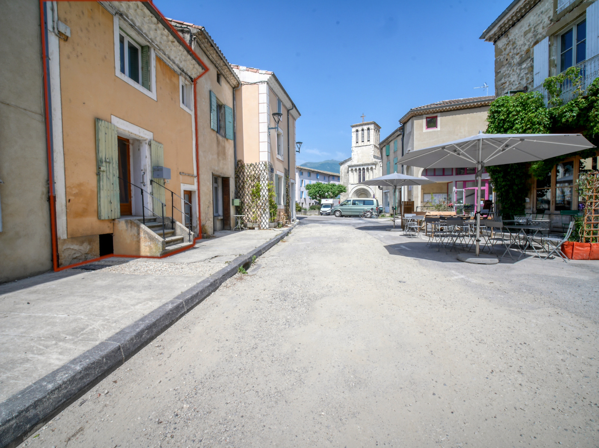

A propos
Rare : cette ancienne maison de maître datant du XIXe siècle servait d’habitation au prêtre du village mais était également un lieu d’accueil et d’échange. Construite en pierres locales, elle lui confère une grande solidité et une bonne inertie thermique. Son architecture est élégante et symétrique. Une particularité rend cette demeure unique : une source traverse l’une des caves en longeant le mur extérieur. En construisant volontairement la maison près de l’eau, les bâtisseurs ont voulu symboliser l’abondance et la fertilité. Idéalement disposée, son orientation vers le Sud lui apporte lumière et chaleur. Ouverte sur la nature, la vue depuis la propriété est magnifique : avec une biodiversité riche et variée, vous aurez l’occasion d’observer de nombreux animaux sauvages. La maison offre un cadre de vie mêlant calme et douceur. Situé à proximité de Châtillon-en-Diois, Menglon s'étend entre vignes et noyers, abritant de charmants hameaux et de belles fermes, ainsi que des châteaux dotés de tourelles. Vous y trouverez une école primaire, des transports scolaires, ainsi qu’une vie associative dynamique.
Répartition des pièces : rez-de-chaussée avec un hall d’entrée et un couloir qui distribue une cuisine, un salon, un wc séparé et une salle de douche. À l’étage vous trouverez 4 chambres, une pièce de douche avec wc. En rez-de-jardin vous découvrirez un atelier, une chaufferie et 2 caves.
À noter que pour améliorer son confort énergétique, cette demeure pourrait bénéficier de l’aide financière ma prime rénov.
Photos


 



Vidéo Intérieur
Vidéo Extérieur
Géolocalisation
Cadastre

Vue aérienne

Détails Techniques
- Année de construction : Plus de 100 ans
- Année d’achat : 2012
- Matériaux de construction : Pierre
- Isolation :Murs > pas d'isolation - Plafond > Partiellement isolé
- Toiture: Charpente traditionnelle
- Assainissement : Tout à l'égout
- Huisseries : Bois double vitrages
- Superficie habitable : 125 m2
- Surface cadastrale : 545 m2
- Nombre de chambres : 4
- Annexes: Atelier/ caves
- Mode de chauffage : Chaudière fioul / Cheminée insert
- Coût annuel du chauffage : Non représentatif (Maison secondaire)
- Coût annuel de l’électricité : Non représentatif (Maison secondaire)
- Taxe foncière : 430 €
- Autres informations : Derniers travaux réalisés 2018 Débouchage/Curage canalisation eaux pluviales
Diagnostic de Performance Énergétique